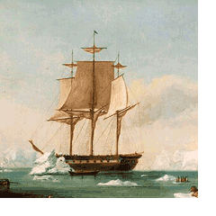

|  |
Sailors' Cemetery Site Fort Baker, Marin County, California History |
Some distance south of old Saucelito, on the brow of a hill overlooking the bay, there is an enclosure about forty feet square containing, perhaps, a dozen graves of seamen, two of whom have headstones which tell their story as follows :--
SACRED
To the Memory of
HENRY MORTIMER
A Seaman of the U.S.SHIP
"Vincennes" Born in London, England, 1820, who
Was drowned in Saucelito bay
August 27, 1850, aged thirty years
This tombstone was erected by his
Shipmates, though his body's under
Hatches, his soul has gone aloft.
In Memory of
MAURICE McGRATH
A native of Queenstown,
IRELAND,
Who died
August 29, 1855, aged eighteen years,
By falling from aloft
On board H.M.S.
Amphitrite.
Erected by the Ship's Company.
History of Marin County, California, &c., by J.P. Munro-Fraser, Historian, Alley Bowen & Co., 1880, page 390, Saucelito Township. Republished 1972 by Charmaine Burdell Veronda, Petaluma, California.